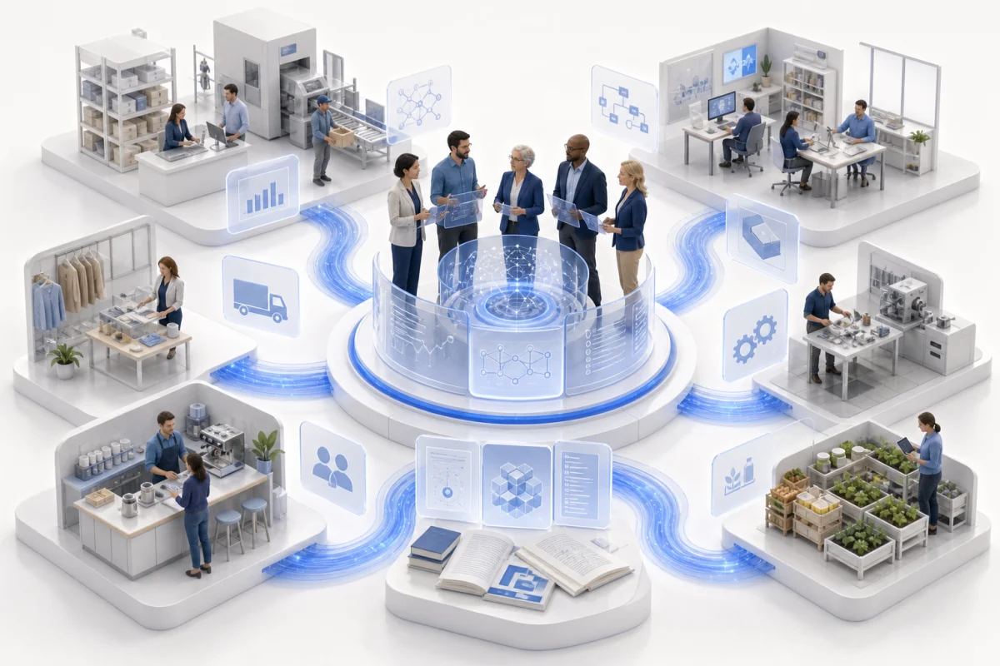
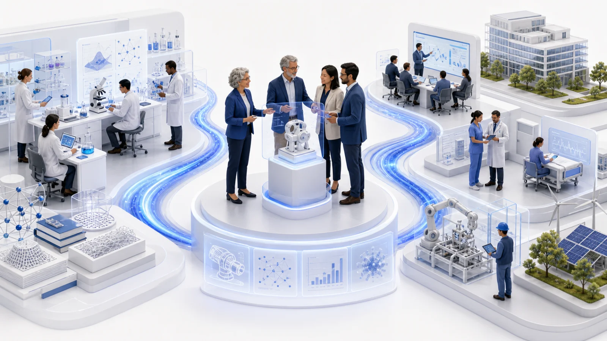
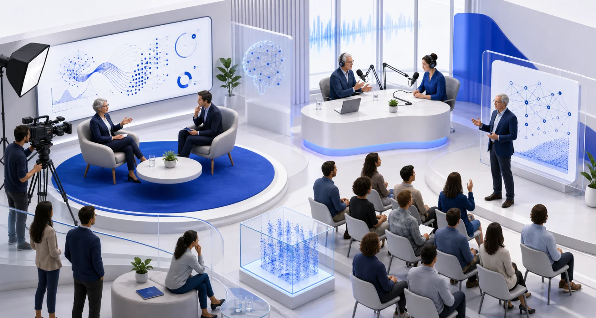

de investigación
IA, gestión del conocimiento,
educación e ingeniería de software.
Desarrollamos proyectos científico-tecnológicos en inteligencia artificial, ingeniería de software, gestión del conocimiento y educación, y transferimos sus resultados a organizaciones e instituciones.
IA, gestión del conocimiento,
educación e ingeniería de software.
Conocimiento orientado a transferencia,
innovación y aplicación.
Iniciativas científicas y tecnológicas
desarrolladas junto a organizaciones.
Experiencias con universidades
e instituciones de distintos países.
Iniciativas que producen conocimiento y herramientas para responder a desafíos concretos.

Modelo aplicable a pequeñas y medianas empresas, con metodología y materiales para facilitar su adopción.
Observatorio con datos sistematizados, acceso libre y navegación por comunas.
Algoritmos predictivos para diagnóstico temprano, perfilado de riesgo y apoyo a decisión clínica.
Cuatro áreas que articulan conocimiento científico, desarrollo tecnológico y aplicación.

Aprendizaje automático, procesamiento del lenguaje natural, salud mental, agentes y aplicaciones.
Ver publicaciones
Modelos, madurez organizacional, medición, arquitectura tecnológica y observatorios.
Ver publicaciones
Tecnologías aplicadas a la enseñanza, el aprendizaje y los dispositivos didácticos.
Ver publicacionesIngeniería de requisitos, metodologías, buenas prácticas y explotación de información.
Gemis nació en 2009 bajo la dirección de la Dra. Ing. Florencia Pollo-Cattaneo. Desde entonces, reúne profesionales que vinculan la investigación académica con desafíos y oportunidades del mundo real.
Talleres internacionales organizados por Gemis en el marco de ICAI, con ediciones en Argentina, Perú, Ecuador, Chile, Marruecos y Estados Unidos.
Espacio dedicado a gestión del conocimiento, innovación y tecnologías aplicadas.
Foro internacional sobre inteligencia artificial aplicada, sistemas inteligentes y experiencias tecnológicas.
Desarrollos, prototipos y soluciones donde los resultados de investigación se articulan con organizaciones, empresas e instituciones.

Entrevistas, notas, exposiciones y apariciones públicas vinculadas al trabajo de investigación y transferencia

Entrevista a María Florencia Pollo-Cattaneo en el programa Ahora Play.
Noviembre 2024Nota de Fundación Telefónica Movistar sobre inteligencia artificial y desinformación.
Septiembre 2023Charla en las Jornadas de Inteligencia Artificial de la Universidad de Flores.
Abril 2022Entrevista a Luciano Straccia sobre gestión del conocimiento en las empresas.
Audio entrevista en TimeHacking. Participación de María Florencia Pollo-Cattaneo.
Entrevista radial en Radio 199, 98.9 FM. Participación de María Florencia Pollo-Cattaneo.
Nota de Prensa UTN Buenos Aires sobre la presentación y evaluación de trabajos en talleres internacionales. Participación de María Florencia Pollo-Cattaneo.
Exposición en la Universidad Argentina de la Empresa (UADE). Participación de Luciano Straccia.
Entrevista a Luciano Straccia publicada por Escuela Da Vinci.
Participación de María Florencia Pollo-Cattaneo en contenido audiovisual de divulgación y formación.
Participación de María Florencia Pollo Cattaneo.
Producción audiovisual sobre Procesamiento de Lenguaje Natural, ética e IA, algoritmos genéticos, organigramas y evolución de la IA en el tiempo.
Artículo en Revista En Movimiento #51, UTN Buenos Aires. Entrevista a Luciano Straccia.
Participación radial en Buenos Aires Tecnológica, FM Flores, emitida el 31 de agosto de 2016.
Conocé a las personas que impulsan nuestros proyectos de I+D, publicaciones y encuentros científicos.